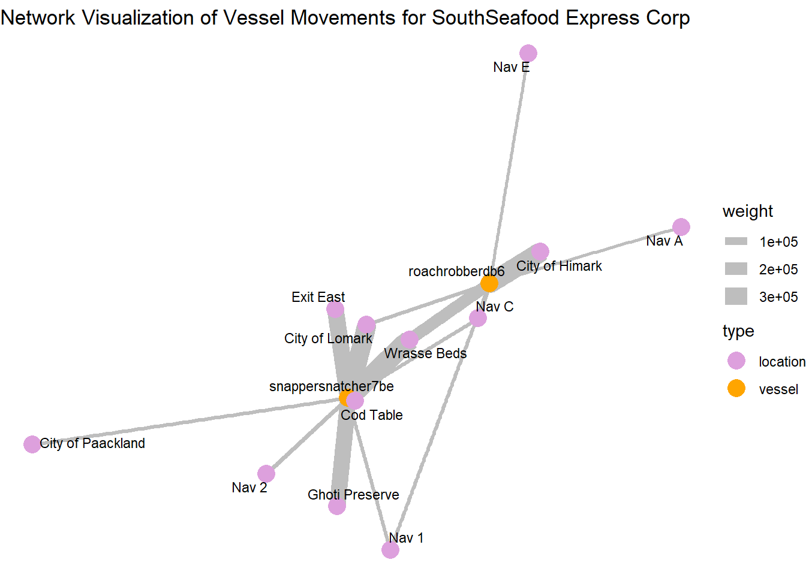
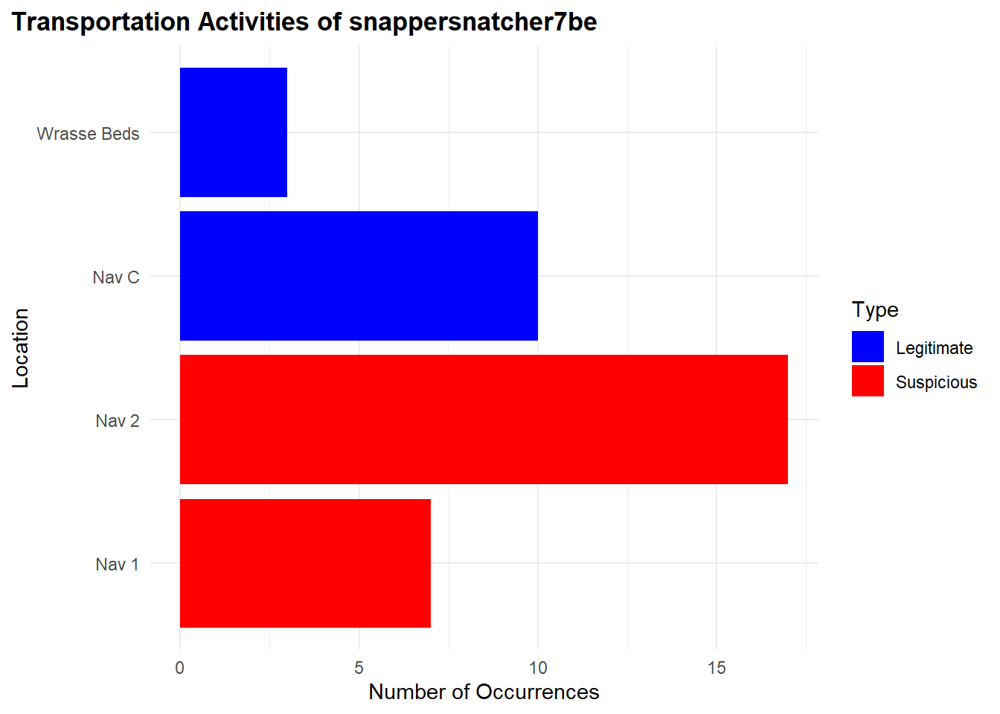
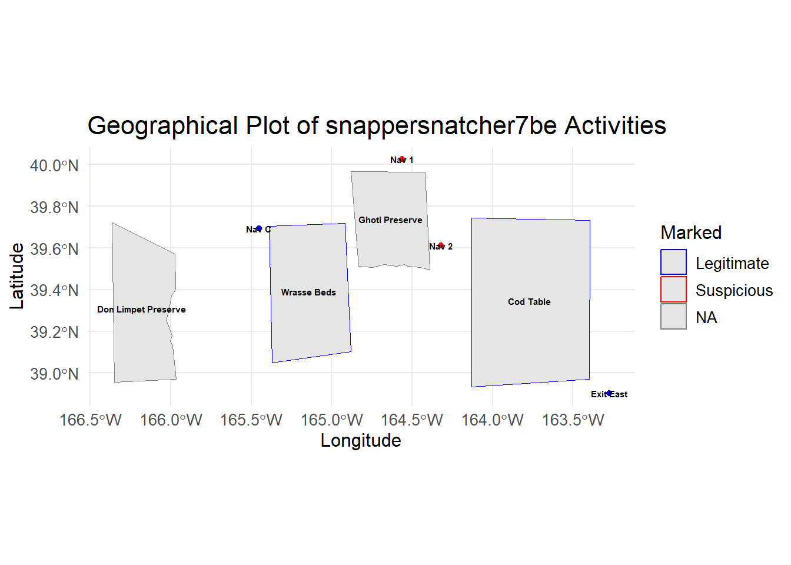

# Load necessary R packages using pacman
pacman::p_load(
# Spatial Data
sf, lwgeom, units, maps,
# Data Manipulation
dplyr, tidyverse, lubridate, jsonlite, httr,
# Visualization
ggplot2, tmap, leaflet, viridis, plotly, ggraph, gganimate, gifski, ggrepel,
# Network Analysis
igraph, tidygraph, visNetwork, graphlayouts
)Investigations
Loading R Packages
Packages Used:
- sf: Handles simple features (spatial vector data) in R.
- lwgeom: Extends
sfwith additional geometric operations. - units: Manages unit-aware vectors in R.
- maps: Provides map data for plotting.
- dplyr: Efficient data manipulation and transformation.
- tidyverse: Collection of R packages for data science (includes
dplyr,ggplot2, etc.). - lubridate: Simplifies date and time manipulation.
- jsonlite: Parses and generates JSON data.
- httr: Facilitates working with URLs and HTTP.
- ggplot2: Creates elegant data visualizations.
- tmap: Thematic maps for spatial data.
- leaflet: Interactive maps using the Leaflet JavaScript library.
- viridis: Color scales for scientific data.
- plotly: Interactive graphing library.
- ggraph: Extends
ggplot2for graph visualization. - gganimate: Animates
ggplot2plots. - gifski: Renders animations to GIFs.
- ggrepel: Prevents overlapping text labels in
ggplot2. - igraph: Network analysis and visualization.
- tidygraph: Tidy API for network data.
- visNetwork: Interactive network visualization.
- graphlayouts: Layout algorithms for network visualization.
Loading the Data
Loading the mc2 json data which is a directed multigraph consisting of nodes containing entities and edges containing relationships
json_data <- fromJSON("data/mc2.json")In this section, we will prepare our links dataset
Show the code
links_df <- as_tibble(json_data$links) %>%
distinct() %>%
mutate(source = as.character(source),
target = as.character(target),
type = as.character(type),
date = date,
time = as.POSIXct(time, format="%Y-%m-%dT%H:%M:%OS", tz="UTC"),
ping_date = as.Date(as.POSIXct(time, format="%Y-%m-%dT%H:%M:%OS", tz="UTC"))) %>%
select(type, time, dwell, source, target, date, ping_date)
mc2_links <- links_df%>%
group_by(source, target, type) %>%
summarise(weights = n(), .groups = 'drop') %>%
filter(source != target) %>%
ungroup()
glimpse(links_df)Rows: 271,643
Columns: 7
$ type <chr> "Event.TransportEvent.TransponderPing", "Event.TransportEven…
$ time <dttm> 2035-09-16 04:06:48, 2035-09-20 05:21:33, 2035-09-28 04:31:…
$ dwell <dbl> 115074.79, 412706.32, 286092.88, 327623.95, 243225.35, 10956…
$ source <chr> "City of Haacklee", "City of Haacklee", "City of Haacklee", …
$ target <chr> "perchplundererbc0", "perchplundererbc0", "perchplundererbc0…
$ date <chr> NA, NA, NA, NA, NA, NA, NA, NA, NA, NA, NA, NA, NA, NA, NA, …
$ ping_date <date> 2035-09-16, 2035-09-20, 2035-09-28, 2035-10-04, 2035-10-15,…In this section, we will prepare our nodes dataset
Show the code
# Convert nodes to tibble, modify variable types, and select required columns
nodes_df <- as_tibble(json_data$nodes) %>%
mutate(
type_original = type,
id = as.character(id),
type = as.character(type),
type = case_when(
type %in% c("Entity.Vessel.CargoVessel", "Entity.Vessel.Ferry.Cargo", "Entity.Vessel.FishingVessel") ~ "Entity.Vessel",
TRUE ~ type
),
tonnage = as.numeric(as.character(tonnage)),
length_overall = as.numeric(as.character(length_overall)),
Activities = as.character(Activities),
fish_species_present,
kind = as.character(kind),
flag_country = as.character(flag_country),
company = as.character(company),
name = as.character(name),
Name = as.character(Name)) %>%
select(id, date, type,type_original, qty_tons, name, Name, company, flag_country, Activities, tonnage, length_overall, fish_species_present, kind)
glimpse(nodes_df)Rows: 5,637
Columns: 14
$ id <chr> "gadusnspecificatae4ba", "piscesfrigus900", "pisc…
$ date <chr> NA, NA, NA, NA, NA, NA, NA, NA, NA, NA, NA, NA, N…
$ type <chr> "Entity.Commodity.Fish", "Entity.Commodity.Fish",…
$ type_original <chr> "Entity.Commodity.Fish", "Entity.Commodity.Fish",…
$ qty_tons <dbl> NA, NA, NA, NA, NA, NA, NA, NA, NA, NA, NA, NA, N…
$ name <chr> "Cod/Gadus n.specificatae", "Birdseye/Pisces frig…
$ Name <chr> NA, NA, NA, NA, NA, NA, NA, NA, NA, NA, "Haacklee…
$ company <chr> NA, NA, NA, NA, NA, NA, NA, NA, NA, NA, NA, NA, N…
$ flag_country <chr> NA, NA, NA, NA, NA, NA, NA, NA, NA, NA, NA, NA, N…
$ Activities <chr> "NULL", "NULL", "NULL", "NULL", "NULL", "NULL", "…
$ tonnage <dbl> NA, NA, NA, NA, NA, NA, NA, NA, NA, NA, NA, NA, N…
$ length_overall <dbl> NA, NA, NA, NA, NA, NA, NA, NA, NA, NA, NA, NA, N…
$ fish_species_present <list> <NULL>, <NULL>, <NULL>, <NULL>, <NULL>, <NULL>, …
$ kind <chr> NA, NA, NA, NA, NA, NA, NA, NA, NA, NA, "city", "…
Note
We save our processed data into .rds data format files using the write_rds() of readr package. The output file is saved in rds sub-folder. We do this to reduce the loading time and more importantly, we can avoid uploading the large raw files onto GitHub.
write_rds(links_df, "data/rds/links_df.rds")
links_df <- read_rds("data/rds/links_df.rds")
write_rds(mc2_links, "data/rds/mc2_links.rds")
mc2_links <- read_rds("data/rds/mc2_links.rds")
write_rds(nodes_df, "data/rds/nodes_df.rds")
nodes_df <- read_rds("data/rds/nodes_df.rds")In this section, we will extract out seperate datasets from our nodes and links datasets
vessels_df <- nodes_df %>%
filter(type == "Entity.Vessel") %>%
select(id, Name, company, flag_country, type) %>%
mutate(type = sub("Entity.Vessel.", "", type))
delivery_report_df <- nodes_df %>%
filter(type == "Entity.Document.DeliveryReport") %>%
rename(cargo_id = id)%>%
select(qty_tons,date,cargo_id)
fish_df <- nodes_df %>%
filter(type == "Entity.Commodity.Fish") %>%
rename(fish_name = name)
city_df <- nodes_df %>%
filter(type == "Entity.Location.City")%>%
rename(city_name = Name)
locations_df <- nodes_df %>%
filter(type == "Entity.Location.City"| type=="Entity.Location.Point"| type=="Entity.Location.Region") %>%
rename(location_name = Name)%>%
select(id,location_name)
harbor_report_df <- links_df %>%
filter(type == "Event.HarborReport") %>%
select(date,source,target)
transponder_ping_df <- links_df %>%
filter(type == "Event.TransportEvent.TransponderPing") %>%
select(time,dwell,source,target,ping_date)
transactions_df <- links_df %>%
filter(type == "Event.Transaction") %>%
select(date,source,target)
fishing_grounds_df <- nodes_df %>%
filter(kind == "Fishing Ground"|kind == "Ecological Preserve") %>%
select(id,Name,kind,fish_species_present)Data Cleaning
We discovered that the columns “type,” “source,” and “target” are complete, containing no missing values. Conversely, the columns “time,” “dwell,” “date,” and “ping_date” exhibit numerous missing values. This outcome is anticipated since these columns exclusively hold data for specific categories.
# Check for columns with missing values
colSums(is.na(links_df)) type time dwell source target date ping_date
0 13101 13101 0 0 258542 13101 Show the code
summary(links_df) type time dwell
Length:271643 Min. :2035-02-01 00:00:00.00 Min. : 0
Class :character 1st Qu.:2035-04-17 13:33:02.35 1st Qu.: 4695
Mode :character Median :2035-06-28 19:34:55.25 Median : 6287
Mean :2035-06-30 22:13:03.65 Mean : 19775
3rd Qu.:2035-09-13 13:44:34.00 3rd Qu.: 12101
Max. :2035-11-30 00:00:00.00 Max. :28735323
NA's :13101 NA's :13101
source target date ping_date
Length:271643 Length:271643 Length:271643 Min. :2035-02-01
Class :character Class :character Class :character 1st Qu.:2035-04-17
Mode :character Mode :character Mode :character Median :2035-06-28
Mean :2035-06-30
3rd Qu.:2035-09-13
Max. :2035-11-30
NA's :13101 Next, we ensure there are no duplicated rows
Show the code
links_df[duplicated(links_df),]# A tibble: 790 × 7
type time dwell source target date ping_date
<chr> <dttm> <dbl> <chr> <chr> <chr> <date>
1 Event.HarborReport NA NA wavewranglerc2d City … 2035… NA
2 Event.HarborReport NA NA wavewranglerc2d City … 2035… NA
3 Event.HarborReport NA NA wavewranglerc2d City … 2035… NA
4 Event.HarborReport NA NA wavewranglerc2d City … 2035… NA
5 Event.HarborReport NA NA wavewranglerc2d City … 2035… NA
6 Event.HarborReport NA NA wavewranglerc2d City … 2035… NA
7 Event.HarborReport NA NA yellowfintunataker08b City … 2035… NA
8 Event.HarborReport NA NA webigailba7 City … 2035… NA
9 Event.HarborReport NA NA webigailba7 City … 2035… NA
10 Event.HarborReport NA NA webigailba7 City … 2035… NA
# ℹ 780 more rowsLet’s try to understand how our links data is categorized into. It seems there are three categories of data as shown below.
Show the code
unique_type <- unique(links_df$type)
print(unique_type)[1] "Event.TransportEvent.TransponderPing"
[2] "Event.Transaction"
[3] "Event.HarborReport" Define a function to count and print unique categories for a given column.
Show the code
count_unique_categories <- function(data, column_name) {
cat("**", column_name, "**\n", sep = "")
category_counts <- table(data[[column_name]])
sorted_counts <- sort(category_counts, decreasing = TRUE)
print(sorted_counts)
}Let’s take a look into our nodes dataframe.
Show the code
glimpse(nodes_df)Rows: 5,637
Columns: 14
$ id <chr> "gadusnspecificatae4ba", "piscesfrigus900", "pisc…
$ date <chr> NA, NA, NA, NA, NA, NA, NA, NA, NA, NA, NA, NA, N…
$ type <chr> "Entity.Commodity.Fish", "Entity.Commodity.Fish",…
$ type_original <chr> "Entity.Commodity.Fish", "Entity.Commodity.Fish",…
$ qty_tons <dbl> NA, NA, NA, NA, NA, NA, NA, NA, NA, NA, NA, NA, N…
$ name <chr> "Cod/Gadus n.specificatae", "Birdseye/Pisces frig…
$ Name <chr> NA, NA, NA, NA, NA, NA, NA, NA, NA, NA, "Haacklee…
$ company <chr> NA, NA, NA, NA, NA, NA, NA, NA, NA, NA, NA, NA, N…
$ flag_country <chr> NA, NA, NA, NA, NA, NA, NA, NA, NA, NA, NA, NA, N…
$ Activities <chr> "NULL", "NULL", "NULL", "NULL", "NULL", "NULL", "…
$ tonnage <dbl> NA, NA, NA, NA, NA, NA, NA, NA, NA, NA, NA, NA, N…
$ length_overall <dbl> NA, NA, NA, NA, NA, NA, NA, NA, NA, NA, NA, NA, N…
$ fish_species_present <list> <NULL>, <NULL>, <NULL>, <NULL>, <NULL>, <NULL>, …
$ kind <chr> NA, NA, NA, NA, NA, NA, NA, NA, NA, NA, "city", "…Again, it’s hard to make sense if these missing values are actually important due ot the nature of the data. We shall handle it as it goes. However, the main columns we are interested in id and type are not missing any data.
Show the code
# Check for columns with missing values
colSums(is.na(nodes_df)) id date type
0 330 0
type_original qty_tons name
0 330 5627
Name company flag_country
5317 5458 5341
Activities tonnage length_overall
0 5359 5354
fish_species_present kind
0 5613 There does not seem to be any whole duplicate rows.
Show the code
nodes_df[duplicated(nodes_df),]# A tibble: 0 × 14
# ℹ 14 variables: id <chr>, date <chr>, type <chr>, type_original <chr>,
# qty_tons <dbl>, name <chr>, Name <chr>, company <chr>, flag_country <chr>,
# Activities <chr>, tonnage <dbl>, length_overall <dbl>,
# fish_species_present <list>, kind <chr>It seems we have many types of nodes even after grouping more of the Vessel types into our generic “Entity.Vessel”. It seems “Entity.Commodity.Fish”,‘Entity.Vessel’, ‘Entity.Location.Point’, ‘Entity.Location.City’, ‘Entity.Location.Region’ will be important for us.
Show the code
unique_type <- unique(nodes_df$type)
print(unique_type) [1] "Entity.Commodity.Fish" "Entity.Location.City"
[3] "Entity.Document.DeliveryReport" "Entity.Vessel"
[5] "Entity.Vessel.Other" "Entity.Vessel.Ferry.Passenger"
[7] "Entity.Vessel.Research" "Entity.Vessel.Tour"
[9] "Entity.Location.Point" "Entity.Location.Region" Show the code
count_unique_categories(nodes_df, 'type') **type**
Entity.Document.DeliveryReport Entity.Vessel
5307 280
Entity.Location.Point Entity.Commodity.Fish
12 10
Entity.Location.City Entity.Location.Region
6 6
Entity.Vessel.Tour Entity.Vessel.Other
6 5
Entity.Vessel.Ferry.Passenger Entity.Vessel.Research
3 2 Show the code
count_unique_categories(nodes_df, 'flag_country') **flag_country**
Oceanus Playa Solis Helixia Nyxonix Alverossia
177 5 4 4 3
Ariuzima Coralada Kethanor Lumindoria Orvietola
3 3 3 3 3
Utoparadia Uzifrica Valtalmo Anderia del Mar Azurionix
3 3 3 2 2
Calabrand Faraluna Gavanovia Isla Solmar Islavaria
2 2 2 2 2
Khamseena Kondarica Mawalara Merigrad Novarctica
2 2 2 2 2
Novarcticaa Osterivaro Rio Solovia Riodelsol Thessalandia
2 2 2 2 2
Utoporiana Uziland Zawalinda Afarivaria Alverovia
2 2 2 1 1
Arreciviento Arvaros Arvekalia Baziuzim Brindisola
1 1 1 1 1
Brindivaria Coralmarica Helvoris Icarnia Imazam
1 1 1 1 1
Islavaragon Kethilim Kilivaria Kondanovia Kondarivakia
1 1 1 1 1
Korvelonia Kuzalanda Lumakari Luminkind Mango del Oro
1 1 1 1 1
Marebak Marifada Myriadonia Nalakond Nalaloria
1 1 1 1 1
Oceanterra Puerto del Mar Sirenareef Solovarossa Solterrix
1 1 1 1 1
Syrithania Talandria Vesperlandia Vientoro Wysterion
1 1 1 1 1
Yggdrasonia Zambarka
1 1 Show the code
count_unique_categories(nodes_df, 'kind') **kind**
buoy city Ecological Preserve Fishing Ground
12 6 3 3 There are 100 companies found in our dataset
count_unique_companies <- length(unique(nodes_df$company))
count_unique_companies[1] 100The code below snippet employs the sf package to read and manipulate GeoJSON data. It uses st_read() to import the GeoJSON file and renames the column “Name” to “id” using rename() from the dplyr package.
Show the code
# Read the GeoJSON file
geojson_file <- "data/Oceanus Information/Oceanus Geography.geojson"
geo_data <- st_read(geojson_file) %>%
rename(id = Name)Reading layer `Oceanus Geography' from data source
`C:\weipengten\ISSS608-VAA-Project\Project\data\Oceanus Information\Oceanus Geography.geojson'
using driver `GeoJSON'
Simple feature collection with 29 features and 7 fields
Geometry type: GEOMETRY
Dimension: XY
Bounding box: xmin: -167.0654 ymin: 38.07452 xmax: -163.2723 ymax: 40.67775
Geodetic CRS: WGS 84Using tmap we create a basic plot of our locations we are interested in.
Show the code
# Visualize the geographical data with tmap
tmap_mode("plot")
tm_shape(geo_data) +
tm_polygons(alpha = 0.5) +
tm_borders(lwd = 1, alpha = 0.5) +
tm_layout(frame = FALSE) +
tmap_style("gray") +
tm_shape(geo_data) +
tm_dots(col = "purple", size = 0.2) +
tm_text(text = "id", size = 0.6, col = "black") + # Add labels to the locations
tm_layout(legend.position = c("left", "bottom"))
Task 1
1.1 Processing fish locations data and visualizing
Show the code
# Initial cleaning and splitting of fish species data
fishing_grounds_df <- fishing_grounds_df %>%
mutate(fish_species_present = gsub("c[(]", "", fish_species_present)) %>%
mutate(fish_species_present = gsub("\"", "", fish_species_present)) %>%
mutate(fish_species_present = gsub("[)]", "", fish_species_present)) %>%
mutate(fish_species_present = strsplit(as.character(fish_species_present), ",\\s*")) %>%
unnest(fish_species_present) %>%
rename(fishing_location = Name)
# Group by fish species and collect all unique locations into a list
final_fish_locations_df <- fishing_grounds_df %>%
group_by(fish_species_present) %>%
summarise(fishing_locations = list(unique(fishing_location)), .groups = 'drop')
ggplot(fishing_grounds_df, aes(x = fishing_location, y = fish_species_present, fill = kind)) +
geom_tile(color = "white") +
scale_fill_manual(values = c("Ecological Preserve" = "lightblue", "Fishing Ground" = "lightgreen")) +
labs(title = "Fish Distribution in Fishing Locations",
x = "Fishing Location",
y = "Fish Species",
fill = "Location Type") +
theme_minimal() + theme(panel.grid.major = element_blank(),
panel.grid.minor = element_blank())+
theme(axis.text.x = element_text(angle = 90, vjust = 0.25, hjust=0.25))
Plot above shows the locations in which various fish varieties are found. Fishing is supposed to be done only in the designated fishing grounds and not in ecological preserves
Insights: There are some fishes like Sockfish/Pisces foetida,Helenaa/Pisces satis, Offidiaa/Piscis osseus which are found only in ecological preserves. So tracking fishing of these varieties can give leads to illegal fishing happening.
1.2 Processing transactions,harbor report and delivery report data
Show the code
# Convert date columns to Date type
transactions_df$date <- as.Date(transactions_df$date)
harbor_report_df$date <- as.Date(harbor_report_df$date)
delivery_report_df$date <- as.Date(delivery_report_df$date)
# Performing the inner join to pick only fishing or cargo vessels
harbor_report_df <- inner_join(harbor_report_df, vessels_df, by = c("source" = "id")) %>%
rename(
vessel_name = Name,
vessel_company = company,
vessel_id=source,
city=target,
vessel_type=type
) %>%
select(date,vessel_id,city,vessel_name,vessel_type,vessel_company,flag_country)
transponder_ping_df <- inner_join(transponder_ping_df, vessels_df, by = c("target" = "id"))%>%
rename(
location = source,
vessel_id = target,
vessel_name = Name,
vessel_company = company,
vessel_type=type
) %>%
select(time,ping_date,dwell, location,vessel_id,vessel_name,vessel_type,vessel_company,flag_country)
# Group by date, vessel_id, and city, and sum up dwell time
transponder_ping_day_sum_df <- transponder_ping_df %>%
group_by(ping_date, vessel_id, location,vessel_name,vessel_type,vessel_company) %>%
summarise(total_dwell_time = sum(dwell, na.rm = TRUE), .groups = 'drop') %>%
# Add filter to exclude records where total_dwell_time is 0
filter(total_dwell_time != 0)
transponder_ping_city_df <- transponder_ping_day_sum_df %>%
filter(grepl("^City", location))
transponder_ping_non_city_df <- transponder_ping_day_sum_df %>%
filter(!grepl("^City", location))
transponder_ping_south_df <- transponder_ping_day_sum_df %>%
filter(grepl("^SouthSeafood Express Corp", vessel_company))
# preparing transactions
transactions_df<-transactions_df%>% rename(cargo_id = source)
#pivot fish and city as columns
city_and_fish_df <- bind_rows(city_df, fish_df)
transactions_type <- transactions_df %>%
left_join(city_and_fish_df, by = c("target" = "id")) %>%
select(date.x, cargo_id, target, type)
transactions_cargo <- transactions_type %>%
pivot_wider(names_from = type, values_from = target, id_cols = c(date.x, cargo_id))%>%
rename(
date=date.x,
fish = Entity.Commodity.Fish,
city = Entity.Location.City
)
transactions_cargo <- transactions_cargo %>%
left_join(fish_df, by = c("fish" = "id")) %>%
select(date.x, cargo_id, fish, city,fish_name)%>%
rename(date_of_arrival=date.x,
city_of_arrival=city,
fish_in_cargo=fish
)
transactions_cargo <- transactions_cargo %>%
left_join(delivery_report_df, by = c("cargo_id"="cargo_id","date_of_arrival" = "date")) %>%
select(date_of_arrival,cargo_id, fish_in_cargo, city_of_arrival,fish_name,qty_tons)1.3 Exploring outlier data
Show the code
iqr_qty <- IQR(transactions_cargo$qty_tons)
upper_bound <- quantile(transactions_cargo$qty_tons, 0.75) + 1.5 * iqr_qty
outliers <- transactions_cargo[transactions_cargo$qty_tons > upper_bound, ]
# Create a histogram
hist(transactions_cargo$qty_tons)
# Add outliers as points
points(transactions_cargo$qty_tons[transactions_cargo$qty_tons > upper_bound],
rep(0, sum(transactions_cargo$qty_tons > upper_bound)),
col = "red", pch = 16)
Insight : Anomaly qty_tons are mostly greater than 70 tons
1.4 Plotting fish arrivals over time
Show the code
monthly_data <- transactions_cargo %>%
mutate(month = format(date_of_arrival, "%Y-%m"))
# Convert month to Date type for proper ordering in ggplot2
monthly_data$month <- as.Date(paste0(monthly_data$month, "-01"))
# Group by month and fish_name, and summarize total quantity in tons
monthly_data <- monthly_data %>%
group_by(month, fish_name) %>%
summarize(total_qty = sum(qty_tons)) %>%
ungroup()
# Plot the data
p <- ggplot(monthly_data, aes(x = month, y = total_qty, color = fish_name, group = fish_name)) +
geom_line() +
labs(title = "Monthly Fish Transactions", x = "Month", y = "Quantity in Tons")
ggplotly(p)Insights:
- Huge increase in Cod arrivals starting from July. This can be investigated for illegal fishing exceeding allowed limits.
- There are Salmon cargoes arriving,but cant attribute salmon to fishing grounds or ecological preserves. So it might be unregulated fishing from locations where fishing is not supposed to be done.
- Protected species ( Sockfish/Pisces foetida,Helenaa/Pisces satis, Offidiaa/Piscis osseus ) are arriving in cargo and need to be explored
1.5 Plotting protected fish quantities arriving at each city over time
Show the code
city_time_analysis <- transactions_cargo %>%
mutate(month_of_arrival = format(date_of_arrival, "%Y-%m"))
# Convert month to Date type for proper ordering in ggplot2
city_time_analysis$month_of_arrival <- as.Date(paste0(city_time_analysis$month_of_arrival, "-01"))
# Group by month and fish_name, and summarize total quantity in tons
city_time_analysis <- city_time_analysis %>%
group_by(month_of_arrival,city_of_arrival,fish_name) %>%
summarize(total_qty = sum(qty_tons)) %>%
ungroup()
# Example endangered fish list
endangered_fish <- c(" Helenaa/Pisces satis", "Offidiaa/Piscis osseus","Sockfish/Pisces foetida")
# Generate a color palette, highlighting endangered species
fish_colors <- ifelse(city_time_analysis$fish_name %in% endangered_fish, "red", "grey") # This creates a vector of 'red' or 'grey'
unique_fish <- unique(city_time_analysis$fish_name)
colors <- setNames(ifelse(unique_fish %in% endangered_fish, "red", "grey"), unique_fish)
# Add a custom color scale to the plot
p <- ggplot(city_time_analysis, aes(x = month_of_arrival, y = total_qty, fill = fish_name)) +
geom_bar(stat = "identity", position = "stack") +
scale_fill_manual(values = colors) +
facet_wrap(~ city_of_arrival, scales = "free_y") +
labs(title = "Fish Arrivals by City Over Time", subtitle = "Red highlights endangered species",
x = "Month of Arrival", y = "Total Quantity in Tons") +
theme(axis.text.x = element_text(angle = 45, hjust = 1),
legend.title = element_text(face = "bold"))
# Convert to an interactive plotly plot
interactive_plot <- ggplotly(p)
interactive_plot <- interactive_plot %>%
layout(
hoverlabel = list(bgcolor = "white"),
hoverinfo = "text",
tooltip = c("month_of_arrival", "qty_tons", "fish_name")
)
interactive_plot1.6 Logic for inferring mapping between cargo and vessel
This code is designed to match fish cargo transactions with vessel activities using harbor reports and transponder pings. It aims to identify potential vessels involved in direct deliveries or transshipment activities for specific fish cargoes. The goal is to provide a comprehensive mapping of cargoes to vessels, especially focusing on cases with multiple possible matches.
Show the code
#matching based on harbor report and transponder ping
matching_cargo_to_vessel_harbor <- transactions_cargo %>%
inner_join(harbor_report_df, by = c("city_of_arrival" = "city")) %>%
filter(date_of_arrival == date | date_of_arrival - days(1) == date) %>%
select(date_of_arrival, date,cargo_id,fish_in_cargo,city_of_arrival,vessel_id,vessel_company,vessel_type,qty_tons)
matching_cargo_to_vessel_transponder <- transactions_cargo %>%
inner_join(transponder_ping_city_df, by = c("city_of_arrival" = "location")) %>%
filter(date_of_arrival == ping_date | date_of_arrival - days(1) == ping_date) %>%
select(date_of_arrival, ping_date,city_of_arrival,cargo_id,fish_in_cargo,vessel_id,vessel_name,vessel_company,vessel_type,total_dwell_time,qty_tons)
combined_matches <- bind_rows(
matching_cargo_to_vessel_harbor %>% mutate(source = "Harbor"),
matching_cargo_to_vessel_transponder %>% mutate(source = "Transponder")
) %>%
group_by(cargo_id,vessel_id,source) %>%
slice(1) %>%
ungroup() %>%
# Filter to prioritize harbor data
filter(if(any(source == "Harbor")) source == "Harbor" else source =="Transponder")%>% rename(
date_matched_in_harbor_report = date,
date_matched_in_transponder_ping = ping_date
)
library(purrr)
daily_vessel_locations_list <- transponder_ping_day_sum_df %>%
group_by(ping_date, vessel_id, vessel_company) %>%
summarise(ping_locations = list(unique(location)), .groups = 'drop')
# Function to find potential transshipment vessels for a single transaction
find_potential_vessels_single <- function(date_of_arrival, cargo_id, city_of_arrival, fish_in_cargo) {
date_to <- date_of_arrival
date_from <- date_to - 5
target_location <- city_of_arrival
# Get the fishing locations for the fish in the cargo
fish_locations <- final_fish_locations_df %>%
filter(fish_species_present == fish_in_cargo) %>%
pull(fishing_locations) %>%
unlist()
# Direct delivery check
direct_vessels <- daily_vessel_locations_list %>%
filter(ping_date >= date_from & ping_date <= date_to) %>%
filter(map_lgl(ping_locations, ~ any(.x %in% fish_locations))) %>%
filter(map_lgl(ping_locations, ~ any(.x == target_location))) %>%
# filter(vessel_company == cargo_company) %>%
distinct(vessel_id) %>%
pull(vessel_id)
if (length(direct_vessels) > 0) {
return(data.frame(
cargo_id = cargo_id,
vessel_id = direct_vessels
))
}
# Transshipment check
vessels_visiting_fish_location <- daily_vessel_locations_list %>%
filter(ping_date >= date_from & ping_date <= date_to) %>%
filter(map_lgl(ping_locations, ~ any(.x %in% fish_locations))) %>%
# filter(vessel_company == cargo_company) %>%
distinct(vessel_id) %>%
pull(vessel_id)
vessels_visiting_target_location <- daily_vessel_locations_list %>%
filter(ping_date >= date_from & ping_date <= date_to) %>%
filter(map_lgl(ping_locations, ~ any(.x == target_location))) %>%
# filter(vessel_company == cargo_company) %>%
distinct(vessel_id) %>%
pull(vessel_id)
combined_vessels <- unique(c(vessels_visiting_fish_location, vessels_visiting_target_location))
confirmed_vessels_on_date <- harbor_report_df %>%
filter(date == date_to & city == target_location & vessel_id %in% combined_vessels) %>%
distinct(vessel_id) %>%
pull(vessel_id)
if (length(confirmed_vessels_on_date) == 0) {
return(data.frame(
cargo_id = cargo_id,
vessel_id = NA
))
} else {
return(data.frame(
cargo_id = cargo_id,
vessel_id = confirmed_vessels_on_date
))
}
}
# Identify cargos with more than 3 mapping in combined_matches
cargos_with_multiple_mappings <- combined_matches %>%
group_by(cargo_id) %>%
summarise(count = n()) %>%
filter(count > 3) %>%
pull(cargo_id)
# Filter transactions_cargo to include only those cargos
required_columns <- transactions_cargo %>%
filter(cargo_id %in% cargos_with_multiple_mappings) %>%
select(date_of_arrival, cargo_id, city_of_arrival, fish_in_cargo)
# Apply the function to all transactions using pmap_dfr
results <- pmap_dfr(required_columns, function(...) {
find_potential_vessels_single(...)
})
# Identify cargos with <=3 mapping in combined_matches
cargos_with_less_than_3_mapping <- combined_matches %>%
group_by(cargo_id) %>%
summarise(count = n()) %>%
filter(count <=3) %>%
pull(cargo_id)
# Select from combined_matches for cargos with <=3 mapping mapping
combined_matches_3 <- combined_matches %>%
filter(cargo_id %in% cargos_with_less_than_3_mapping)
# Select from results where vessel_id is not NA
results_valid <- results %>%
filter(!is.na(vessel_id))
# Fallback to combined_matches for cargos not matched in results
fallback_cargos <- results %>%
filter(is.na(vessel_id)) %>%
pull(cargo_id)
combined_matches_fallback <- combined_matches %>%
filter(cargo_id %in% fallback_cargos)
# Combine the selected and fallback results
combined_results_final <- bind_rows(combined_matches_3, results_valid, combined_matches_fallback)1.7 Sankey diagram for showing the flow of fish through the port cities
This code aims to create a Sankey diagram that visualizes the flow of fish quantities from vessel companies to their respective cities of arrival and the types of fish in their cargo. The goal is to illustrate the distribution and connections between these entities, focusing on the top 10 vessel companies by quantity.
Show the code
# Aggregate data for Sankey diagram
sankey_data <- combined_results_final %>%
group_by(vessel_company, city_of_arrival, fish_in_cargo) %>%
summarize(total_qty_tons = sum(qty_tons), .groups = 'drop')
# Filter to top 10 vessel companies by quantity
top_companies <- sankey_data %>%
group_by(vessel_company) %>%
summarize(total_qty_tons = sum(total_qty_tons), .groups = 'drop') %>%
top_n(10, total_qty_tons) %>%
pull(vessel_company)
sankey_data <- sankey_data %>%
filter(vessel_company %in% top_companies)
# Create node labels
nodes <- unique(c(sankey_data$vessel_company, sankey_data$city_of_arrival, sankey_data$fish_in_cargo))
node_indices <- setNames(seq_along(nodes) - 1, nodes)
# Create source and target indices
sankey_data <- sankey_data %>%
mutate(source = node_indices[vessel_company],
target_city = node_indices[city_of_arrival],
target_fish = node_indices[fish_in_cargo])
# Create Sankey diagram
fig <- plot_ly(
type = "sankey",
orientation = "h",
node = list(
label = nodes,
pad = 15,
thickness = 20,
line = list(color = "black", width = 0.5)
),
link = list(
source = c(sankey_data$source, sankey_data$target_city),
target = c(sankey_data$target_city, sankey_data$target_fish),
value = c(sankey_data$total_qty_tons, sankey_data$total_qty_tons)
)
)
fig %>%
layout(
title = "Sankey Diagram of Top 10 Vessel Companies by Fish Quantity",
font = list(size = 10)
)1.8 Treemap
This code aims to create a treemap visualization that displays the quantity of fish transported by different vessel companies to various cities, based on the mapping we created earlier in 1.6. The goal is to provide a clear and intuitive representation of the distribution and magnitude of fish quantities across multiple dimensions (cities and companies).
Show the code
library(treemap)
all_cities <- unique(combined_results_final$city_of_arrival)
all_vessel_companies <- unique(combined_results_final$vessel_company)
# Create a data frame with all combinations of cities and vessel companies
complete_data <- expand.grid(
city_of_arrival = all_cities,
vessel_company = all_vessel_companies,
stringsAsFactors = FALSE
)
# Merge the complete_data with combined_matches to ensure all cities and vessel companies are included
merged_data <- merge(complete_data, combined_results_final, by = c("city_of_arrival", "vessel_company"), all.x = TRUE)
# Replace NA values with 0 for qty_tons
merged_data$qty_tons[is.na(merged_data$qty_tons)] <- 0
# Aggregate data for treemap
treemap_data <- merged_data %>%
group_by(city_of_arrival, vessel_company) %>%
summarize(total_qty_tons = sum(qty_tons), .groups = 'drop')
# Normalize the values for better visualization
treemap_data$total_qty_tons <- log1p(treemap_data$total_qty_tons)
# Create the treemap
treemap(treemap_data,
index = c("city_of_arrival", "vessel_company"),
vSize = "total_qty_tons",
vColor = "total_qty_tons",
type = "value",
fontsize.labels = c(20, 12), # Larger font size for inner labels
align.labels = list(c("center", "center"), c("center", "center")), # Center align labels
#inflate.labels = TRUE, # Inflate labels to fit the tiles
title = "Treemap of Fish Quantity by Vessel Company for Each City",
title.legend = "Total Quantity (Log Scale)")1.9 Plotting fish quantities arriving at each city over time
Show the code
# Aggregate quantity by city, fish type, and month of arrival (assuming you have a date_of_arrival column)
city_time_analysis <- transactions_cargo %>%
mutate(month_of_arrival = lubridate::floor_date(date_of_arrival, "month")) %>%
group_by(city_of_arrival, fish_name, month_of_arrival) %>%
summarize(qty_tons = sum(qty_tons), .groups = 'drop')
# Plot with ggplot2
p <- ggplot(city_time_analysis, aes(x = month_of_arrival, y = qty_tons, fill = fish_name)) +
geom_bar(stat = "identity", position = "stack") +
facet_wrap(~ city_of_arrival, scales = "free_y") +
labs(title = "Fish Arrivals by City Over Time", x = "Month of Arrival", y = "Total Quantity in Tons") +
theme(axis.text.x = element_text(angle = 45, hjust = 1))
# Convert to an interactive plotly plot
ggplotly(p)Insights:
- Cod arrival increased significantly in Paackland,South Paackland and Lomark from July
- Significant consistent increase in Wrasse arrivals in Himark
- Sockfish arrived significantly in Hacklee and Himark in November
- Offidiaa arrived significantly in Paackland in November
Task 2
Exploring activities of SouthSeafood Express Corp
2.1 Plotting Monthly Dwell time of vessels belonging to SouthSeafood Express Corp
Show the code
# Aggregate dwell time by month, city, and vessel_id
dwell_time_by_month_city_vessel <- transponder_ping_df %>%
filter(vessel_company == "SouthSeafood Express Corp") %>%
mutate(month = format(ping_date, "%Y-%m")) %>%
group_by(month, location, vessel_id) %>%
summarise(monthly_dwell_time = sum(dwell), .groups = 'drop')
# Plotting with faceting by vessel_id
p2 <- ggplot(dwell_time_by_month_city_vessel, aes(y = month, x = monthly_dwell_time, fill = location)) +
geom_bar(stat = "identity", position = "dodge") +
facet_wrap(~vessel_id, scales = "free_y") + # Free scales can be set if necessary
labs(title = "Monthly Dwell Time by City for Company A, by Vessel",
y = "Month",
x = "Dwell Time") +
theme_minimal() +
theme(legend.position = "bottom",axis.text.x = element_text(angle = 90, hjust = 1),
strip.text.x = element_text(angle = 0, hjust = 0.5, size = 8)) # Adjust strip text for better readability
ggplotly(p2)Insights:
SouthSeafood Express Corp seems to have been caught in the month of May as transponder pings stops at May
Vessel snappersnatcher7be seems to have spent considerable time in ecological preserve ‘ghoti preserve’ in april and in wrasse beds in april. The common fish present in both locations in Wrasse.
2.2 Heatmap of dwell time
Show the code
ggplot(transponder_ping_south_df, aes(x = ping_date, y = location, fill = total_dwell_time)) +
geom_tile(color = "white") + # Adds borders to each tile
scale_fill_gradient(low = "lightblue", high = "darkblue", name = "Dwell Time") + # Color gradient
facet_wrap(~ vessel_id, ncol = 1, scales = "free_y")+
labs(title = "Heatmap of Vessel Location Dwell Times", x = "Date", y = "Location") +
theme_minimal() +
theme(
axis.text.x = element_text(angle = 90, hjust = 1), # Rotate date labels for clarity
axis.title = element_text(size = 12, face = "bold")
)Insight:
Vessels seem to be spending time in exit east as well Himark and Lomark.
2.3. Deep dive into SouthSeafood Express Corp
Show the code
library(ggraph)
# Filter the dataframe for a specific company
transponder_ping_filtered_df <- transponder_ping_day_sum_df %>%
filter(vessel_company == "SouthSeafood Express Corp")
# Create edge list for the graph
# Here, 'from' represents the vessel, and 'to' represents the city (location)
edges_df <- data.frame(
from = transponder_ping_filtered_df$vessel_id,
to = transponder_ping_filtered_df$location,
weight = transponder_ping_filtered_df$total_dwell_time # Use dwell time as weight for edge thickness
)
# Create the graph object
graph <- graph_from_data_frame(edges_df, directed = FALSE)
# Define node types
V(graph)$type <- ifelse(V(graph)$name %in% transponder_ping_filtered_df$vessel_id, "vessel", "location")
# Visualize the network with ggraph
ggraph(graph, layout = 'fr') +
geom_edge_link(aes(edge_width = weight), edge_colour = "grey") + # Edge thickness based on dwell time
geom_node_point(aes(color = type), size = 5) +
geom_node_text(aes(label = name), repel = TRUE, size = 3, color = "black") +
scale_color_manual(values = c("vessel" = "orange", "location" = "plum")) +
theme_void() +
labs(title = "Network Visualization of Vessel Movements for SouthSeafood Express Corp")
Central and High-Activity Locations:
City of Himark and City of Lomark: These locations have multiple connections and thicker edges, indicating they are key hubs with significant vessel activity or prolonged stays.
Wrasse Beds and Ghoti Preserve: Similarly, these locations are prominent in terms of connections and might represent areas where they are performing illegal fishing
Locations with Thicker Edges: Locations like “Exit East” connected by thicker edges suggest that these are areas where vessels tend to stay longer, possibly for transshipment activities.
Paths and Connections: The arrangement of nodes and connections shows how vessels move from one location to another, which locations are frequently connected, and how dense the network is in specific regions.
The path plotting show how vessels move from one location to another and which locations are frequently connected
snappersnatcher seems to use Exit east for transshipment activities
roachrobberdb6 seems to use Nav A and Nav E for transshipment activities
2.3. Deep dive into “snappersnatcher7b”
Retrieve and process transaction data to identify suspicious transactions.
Let’s retrieve the Transaction data by applying the filter type == "Event.Transaction" for our links data
We then perform a self-join on the transaction dataset on source column to get the respective city and fish column for each cargo delivery, filtering for only the two cities we observed earlier ‘City of Paackland’, ‘City of Lomark’ which snappersnatcher7b frequented.
Show the code
# Retrieve and process transaction data
transactions <- links_df %>%
filter(type == "Event.Transaction") %>%
filter(!is.na(source) & !is.na(target)) %>%
group_by(source) %>%
mutate(row_number = row_number(),
date = as.Date(as.character(date), format = "%Y-%m-%d")) %>%
pivot_wider(names_from = row_number, values_from = target) %>%
rename(city = `2`, fish = `1`) %>%
rename(transaction_date = date) %>%
select(source, fish, city, type, transaction_date) %>%
inner_join(fish_df, by = c("fish" = "id"))No duplicated transaction records were found after the self-join
Show the code
duplicated_transactions <- transactions[duplicated(transactions$source), ]
duplicated_transactions# A tibble: 0 × 18
# Groups: source [0]
# ℹ 18 variables: source <chr>, fish <chr>, city <chr>, type.x <chr>,
# transaction_date <date>, date <chr>, type.y <chr>, type_original <chr>,
# qty_tons <dbl>, fish_name <chr>, Name <chr>, company <chr>,
# flag_country <chr>, Activities <chr>, tonnage <dbl>, length_overall <dbl>,
# fish_species_present <list>, kind <chr>Merge the transactions with HarborReport data to identify relevant suspicious transactions.
Next, we proceed with the HarborReport data by applying filter type == Event.HarborReport to our links dataset and retrieve onlysnappersnatcher7b’s records then merge with transactions dataset to filter out relevant suspicious transactions given the fact that the harbor reports are likely to be a few days after the transaction.
Note that, this is a rough merge on city, hence we are just narrowing down and end up with likely pairs of transactions with snappersnatcher7be’s harbor reporting to guess its cargo
Show the code
# Retrieve HarborReport data for "snappersnatcher7be"
harboureport_culprit<- links_df %>%
mutate(date = as.Date(as.character(date), format = "%Y-%m-%d"))%>%
filter(type == "Event.HarborReport") %>%
filter(source =="snappersnatcher7be") %>%
rename(vessel = source) %>%
rename(city = target) %>%
rename(harboreporting_date = date) %>%
select(city, vessel, type, harboreporting_date)
# Merge with transactions and apply filter condition
merged_data <- merge(transactions, harboureport_culprit, by = "city", all.x = TRUE)
filtered_transactions <- merged_data %>%
filter(harboreporting_date >= transaction_date + 1 & # Change the number based on your lag
harboreporting_date <= transaction_date + 3) %>%
select(fish_name , fish, city,harboreporting_date,transaction_date, vessel)We generate a timeline plot illustrating suspicious transactions and harbor reports associated with the vessel “snappersnatcher7be,” showcasing the relationship between transaction dates, cargo types, vessels, and cities involved.
It’s likely to have made transactions of cargo “Wrasse/Labridae n.refert” within thisdate range shown.
Show the code
# Create the timeline plot
ggplot(filtered_transactions) +
geom_segment(aes(x = transaction_date, xend = harboreporting_date, y = fish_name, yend = fish_name, color = vessel), size = 1.5) +
geom_point(aes(x = transaction_date, y = fish_name, color = vessel, shape = city), size = 3) +
labs(title = "Suspicious Transactions and Harbor Reports for snappersnatcher7be", x = "Date", y = "Cargo Type") +
theme_minimal() +
scale_color_discrete(name = "Vessel") +
scale_shape_discrete(name = "City") + # Add legend for city
theme(
plot.title = element_text(hjust = 0, face = "bold"), # Align the title to the left
plot.title.position = "plot" # Ensure title alignment is based on the entire plot area
)From our observations, “snappersnatcher7be” is likely carrying the following cargo:
“Cod/Gadus n.specificatae” around 20th March and
“Wrasse/Labridae n.refert” around 8th May
Additionally, we found its transportation activities suspicious due to its frequent visits to “Ghoti Preserve”:
"Nav 1": 17 occurences"Nav 2": 7 occurences
For legitimate occurrences related to “Wrasse/Labridae n.refert”, there’s fewer:
"Nav C": 10 occurences"Wrasse Beds": 3 occurences
Show the code
# Retrieve TransponderPing data for "snappersnatcher7be"
transponder_culprit <- links_df %>%
filter(type == "Event.TransportEvent.TransponderPing",
target == "snappersnatcher7be",
time <= "2035-05-09",
time >= "2035-04-09")
#### Bar Plot for Suspicious and Legitimate Transportation Activities
# Data for transportation activities
location_counts <- transponder_culprit %>%
filter(!source %in% c('Cod Table', 'Exit East',"City of Paackland", "City of Lomark")) %>%
group_by(source) %>%
summarise(Occurrences = n()) %>%
ungroup() %>%
rename(Location = source) %>%
mutate(Type = case_when(
Location %in% c("Nav 1", "Nav 2") ~ "Suspicious",
TRUE ~ "Legitimate"
))
# Reorder Location factor levels so "Suspicious" locations appear at the top
location_counts <- location_counts %>%
mutate(Location = factor(Location, levels = unique(Location[order(Type, decreasing = TRUE)])))
# Bar plot for transportation activities
ggplot(location_counts, aes(x = Occurrences, y = Location, fill = Type)) +
geom_bar(stat = "identity", position = "dodge") +
labs(title = "Transportation Activities of snappersnatcher7be", x = "Number of Occurrences", y = "Location") +
scale_fill_manual(values = c("Suspicious" = "red", "Legitimate" = "blue")) +
theme_minimal() +
theme(
plot.title = element_text(hjust = 0, face = "bold"), # Align the title to the left
plot.title.position = "plot" # Ensure title alignment is based on the entire plot area
)
Below, is the geographical representation of what we found to be legitmate and suspicious locations for the vessel.
Show the code
location_counts <- transponder_culprit %>%
filter(source %in% c('Cod Table', 'Exit East',"City of Paackland", "City of Lomark","Nav 1", "Nav 2", "Ghoti Preserve", "Exit East", "Nav C", "Wrasse Beds", "Don Limpet Preserve")) %>%
group_by(source) %>%
summarise(Occurrences = n()) %>%
ungroup() %>%
rename(Location = source) %>%
mutate(Marked = case_when(
Location %in% c("Nav 1", "Nav 2") ~ "Suspicious", TRUE ~ "Legitimate"
)) %>%
mutate(Location = factor(Location, levels = unique(Location[order(Marked, decreasing = TRUE)]))) # Reorder Location factor levels
# Merge location counts with geo data
geo_data_0 <- left_join(geo_data, location_counts, by = c("id" = "Location"))
# Extract coordinates from geometry data
coords_0 <- st_coordinates(st_centroid(geo_data_0))
# Add coordinates to the geo_data
geo_data_0$Longitude <- coords_0[,1]
geo_data_0$Latitude <- coords_0[,2]
# Filter for specific IDs to label
label_ids_0 <- c('Cod Table', 'Exit East', 'City of Paackland', 'City of Lomark', 'Nav 1', 'Nav 2', 'Ghoti Preserve', 'Exit East', 'Nav C', 'Wrasse Beds', 'Don Limpet Preserve')
geo_data_labels_0 <- geo_data_0 %>%
filter(id %in% label_ids_0)
# Set plot size (for RStudio or other environments that support resizing)
options(repr.plot.width = 10, repr.plot.height = 8)
# Geographical plot with labels
ggplot() +
geom_sf(data = geo_data_labels_0, aes(geometry = geometry, color = Marked)) +
geom_text(data = geo_data_labels_0 , aes(x = Longitude, y = Latitude, label = id), size = 2, color = "black", fontface = "bold") +
scale_color_manual(values = c("Suspicious" = "red", "Legitimate" = "blue")) +
labs(title = "Geographical Plot of snappersnatcher7be Activities") +
theme_minimal() +
theme(plot.title = element_text(size = 16), # Enlarge title
legend.title = element_text(size = 12), # Enlarge legend title
legend.text = element_text(size = 10), # Enlarge legend text
axis.text = element_text(size = 10), # Enlarge axis text
axis.title = element_text(size = 12)) # Enlarge axis title
2.4. Deep Investigations into “roachrobberdb6”
Merge the transactions with HarborReport data to identify relevant suspicious transactions.
Next, we proceed with the HarborReport data by applying filter type == Event.HarborReport to our links dataset and retrieve onlyroachrobberdb6’s records then merge with transactions dataset to filter out relevant suspicious transactions given the fact that the harbor reports are likely to be a few days after the transaction.
Note that, this is a rough merge on city, hence we are just narrowing down and end up with likely pairs of transactions with roachrobberdb6’s harbor reporting to guess its cargo
Show the code
# Retrieve HarborReport data for "roachrobberdb6"
harboureport_culprit1<- links_df %>%
mutate(date = as.Date(as.character(date), format = "%Y-%m-%d"))%>%
filter(type == "Event.HarborReport") %>%
filter(source =="roachrobberdb6") %>%
rename(vessel = source) %>%
rename(city = target) %>%
rename(harboreporting_date = date) %>%
select(city, vessel, type, harboreporting_date)
# Merge with transactions and apply filter condition
merged_data1 <- merge(transactions, harboureport_culprit1, by = "city", all.x = TRUE)
filtered_transactions1 <- merged_data1 %>%
filter(harboreporting_date >= transaction_date + 1 & # Change the number based on your lag
harboreporting_date <= transaction_date + 3) %>%
select(fish_name, fish, city,harboreporting_date,transaction_date, vessel)We generate a timeline plot illustrating suspicious transactions and harbor reports associated with the vessel “roachrobberdb6,” showcasing the relationship between transaction dates, cargo types, vessels, and cities involved.
Show the code
# Create the timeline plot
ggplot(filtered_transactions1) +
geom_segment(aes(x = transaction_date, xend = harboreporting_date, y = fish_name, yend = fish_name, color = vessel), size = 1.5) +
geom_point(aes(x = transaction_date, y = fish_name, color = vessel, shape = city), size = 3) +
labs(title = "Suspicious Transactions and Harbor Reports for roachrobberdb6", x = "Date", y = "Cargo Type") +
theme_minimal() +
scale_color_discrete(name = "Vessel") +
scale_shape_discrete(name = "City") + # Add legend for city
theme(
plot.title = element_text(hjust = 0, face = "bold"), # Align the title to the left
plot.title.position = "plot" # Ensure title alignment is based on the entire plot area
)From our observations previously, “roachrobberdb6” is likely carrying the following cargo:
“Wrasse/Labridae n.refert” around February and April
“Harland/Piscis sapidum” in April
We found very few of its fishing activities to be suspicious between the period however for the date range. It is likely not to be suspicious.
"Nav 1": 2 occurences"Nav C": 38 occurences"Wrasse Beds": 42 occurences
Show the code
# Retrieve TransponderPing data for "roachrobberdb6"
transponder_culprit1 <- links_df %>%
filter(type == "Event.TransportEvent.TransponderPing",
target == "roachrobberdb6",
time <= "2035-04-05")
#### Bar Plot for Suspicious and Legitimate Transportation Activities
# Data for transportation activities
location_counts1 <- transponder_culprit1 %>%
filter(!source %in% c('Cod Table', 'Exit East',"City of Paackland", "City of Lomark","City of Himark")) %>%
group_by(source) %>%
summarise(Occurrences = n()) %>%
ungroup() %>%
rename(Location = source) %>%
mutate(Type = case_when(
Location %in% c("Nav 1", "Nav 2") ~ "Suspicious",
TRUE ~ "Legitimate"
))
# Reorder Location factor levels so "Suspicious" locations appear at the top
location_counts1 <- location_counts1 %>%
mutate(Location = factor(Location, levels = unique(Location[order(Type, decreasing = TRUE)])))
# Bar plot for transportation activities
ggplot(location_counts1, aes(x = Occurrences, y = Location, fill = Type)) +
geom_bar(stat = "identity", position = "dodge") +
labs(title = "Transportation Activities of roachrobberdb6", x = "Number of Occurrences", y = "Location") +
scale_fill_manual(values = c("Suspicious" = "red", "Legitimate" = "blue")) +
theme_minimal() +
theme(
plot.title = element_text(hjust = 0, face = "bold"), # Align the title to the left
plot.title.position = "plot" # Ensure title alignment is based on the entire plot area
)Below, is the geographical representation of what we found to be legitmate and suspicious locations for the vessel.
Show the code
# Create location_counts1 with the Marked column
location_counts1 <- transponder_culprit1 %>%
filter(source %in% c('Cod Table', 'Exit East',"City of Paackland", "City of Lomark","Nav 1", "Nav 2", "Ghoti Preserve", "Exit East", "Nav C", "Wrasse Beds", "Don Limpet Preserve","Nemo Preserve","Tuna Shelf")) %>%
group_by(source) %>%
summarise(Occurrences = n()) %>%
ungroup() %>%
rename(Location = source) %>%
mutate(Marked = case_when(
Location %in% c("Nav 1", "Nav 2") ~ "Suspicious",
TRUE ~ "Legitimate"
)) %>%
mutate(Location = factor(Location, levels = unique(Location[order(Marked, decreasing = TRUE)]))) # Reorder Location factor levels
# Merge location counts with geo_data to include the Marked column
geo_data_1 <- left_join(geo_data, location_counts1, by = c("id" = "Location"))
# Extract coordinates from geometry data
coords_1 <- st_coordinates(st_centroid(geo_data_1))
# Warning: st_centroid assumes attributes are constant over geometries
# Add coordinates to the geo_data
geo_data_1$Longitude <- coords_1[,1]
geo_data_1$Latitude <- coords_1[,2]
# Filter for specific IDs to label
label_ids <- c('Cod Table', 'Exit East', 'City of Paackland', 'City of Lomark', 'Nav 1', 'Nav 2', 'Ghoti Preserve', 'Exit East', 'Nav C', "Wrasse Beds", "Don Limpet Preserve","Nemo Preserve","Tuna Shelf")
geo_data_labels_1 <- geo_data_1 %>%
filter(id %in% label_ids)
# Set plot size (for RStudio or other environments that support resizing)
options(repr.plot.width = 10, repr.plot.height = 8)
# Geographical plot with labels
ggplot() +
geom_sf(data = geo_data_labels_1, aes(geometry = geometry, color = geo_data_labels_1$Marked)) +
geom_text(data = geo_data_labels_1 , aes(x = Longitude, y = Latitude, label = id), size = 2, color = "black", fontface = "bold") +
scale_color_manual(values = c("Suspicious" = "red", "Legitimate" = "blue")) +
labs(title = "Geographical Plot of roachrobberdb6 Activities") +
theme_minimal() +
theme(plot.title = element_text(size = 16), # Enlarge title
legend.title = element_text(size = 12), # Enlarge legend title
legend.text = element_text(size = 10), # Enlarge legend text
axis.text = element_text(size = 10), # Enlarge axis text
axis.title = element_text(size = 12)) # Enlarge axis title2.5. Suspicious Trajectories
In this section, we conduct an analysis of vessel trajectories to identify suspicious activities, particularly focusing on the operations of SouthSeafood Express Corp.
To begin, we extract transponder ping data, which provides information on vessel movements. We preprocess this data, assigning numeric values to locations and filtering out irrelevant areas such as Haacklee, Himark, Port Grove, Lomark, Paackland, and South Paackland. some interesting findings.
Show the code
data <- transponder_ping_df %>%
mutate(date =ping_date,
start_time = time,
vessel = vessel_id,
company = vessel_company) %>%
group_by(vessel) %>%
mutate(end_time = lead(start_time)) %>%
arrange(start_time) %>%
filter(date >= as.Date("2035-05-01") & date <= as.Date("2035-05-10"))%>%
ungroup() %>%
select(date, start_time, end_time, location, vessel,company)
# Remove rows where end_time is NA (last observation for each vessel)
data <- data %>% filter(!is.na(end_time))%>% filter(!is.na(company))
# Now you have start_time and end_time calculated for each vessel
# Assign numeric values to locations for plotting purposes
data$location_factor <- as.factor(data$location)
data$location_num <- as.numeric(data$location_factor)After preprocessing, we plot the trajectories of two vessels, “snappersnatcher7be” and “roachrobberdb6,” using ggplot. In the ggplot visualization, we showcase the vessels’ paths over time, along with location labels and customized color coding for each vessel. ggrepel was used to ensure that the labels not overlap.
Show the code
combined_data <- data %>%
filter(vessel %in% c("snappersnatcher7be", "roachrobberdb6")) %>%
arrange(vessel, date)
# Create the combined plot for all vessels
ggplot(combined_data, aes(x = date, y = location_num, group = vessel)) +
# Highlight co-occurrences
geom_point(combined_data = data %>% group_by(date, location_num) %>% filter(n() > 1),
aes(x = date, y = location_num), color = "black", size = 6, shape = 21, fill = "red") +
# Original points
geom_point(aes(color = vessel, fill = vessel), size = 4, shape = 21, show.legend = TRUE) +
# Paths with arrows
geom_path(aes(color = vessel, linetype = vessel), size = 1,
arrow = arrow(type = "closed", length = unit(0.3, "cm")), show.legend = FALSE) +
scale_y_continuous(breaks = unique(data$location_num), labels = unique(data$location)) +
labs(title = "Tainamarine Fishing Co's Vessel Trajectories Over Time",
x = "Date",
y = "Location",
color = "Vessel",
fill = "Vessel",
linetype = "Vessel") +
theme_minimal() +
theme(axis.text.x = element_text(angle = 45, hjust = 1),
legend.text = element_text(size = 8),
legend.key.width = unit(1, "lines"),
legend.key.height = unit(1, "lines"), # Control the height of the legend keys
legend.position = "right",
legend.spacing.y = unit(0.5, "cm")) + # Increase vertical spacing between legend items
guides(fill = guide_legend(override.aes = list(shape = 21, size = 4)))
Note
Important Observations
- Through this visualization, we discerned a notable trend: both vessels frequently intersect at
Nav C. This observation suggests a potential area for further investigation into the activities of SouthSeafood Express Corp. The consistent intersection of these vessels raises questions about the nature of their interactions at this location. This finding prompts us to delve deeper into the activities and operations of SouthSeafood Express Corp, as it may indicate coordinated movements or potential transshipment activities between the vessels. Further scrutiny of these intersecting points could uncover crucial insights into the company’s operational strategies and shed light on any illicit activities that may be occurring.
In the following section, we utilize several packages to prepare and process the data. We primarily use the sf package for handling spatial data, the dplyr package for data manipulation, and the ggplot2 package for data visualization. Additionally, we employ the tmap package to create interactive thematic maps.
Here’s a summary of the technical steps:
Data Validation and Joining: We validate the geometries of the geographical data and join the node data with the geographical data based on the location identifier.
Conversion to sf Object: We convert the resulting data frame into an sf object using the st_as_sf function from the sf package.
Coordinates Extraction: We extract coordinates for plotting the trajectories of the vessels “snappersnatcher7be” and “roachrobberdb6” separately using the st_coordinates function.
Data Combination: We combine the data for both vessels into a single data frame using the bind_rows function from the dplyr package.
Show the code
# Validate geometries
geo_data <- geo_data %>%
st_make_valid()
# Join node data
mc2_nodes_geo <- data %>%
left_join(geo_data, by = c("location" = "id"))
# Convert the resulting data frame to sf object
mc2_nodes_geo_sf <- st_as_sf(mc2_nodes_geo)
# Extract coordinates for plotting for geometries
snappersnatcher7be_sf <- mc2_nodes_geo_sf %>%
mutate(Longitude = st_coordinates(st_centroid(geometry))[, 1],
Latitude = st_coordinates(st_centroid(geometry))[, 2]) %>%
filter(vessel == "snappersnatcher7be")
roachrobberdb6_sf <- mc2_nodes_geo_sf %>%
mutate(Longitude = st_coordinates(st_centroid(geometry))[, 1],
Latitude = st_coordinates(st_centroid(geometry))[, 2]) %>%
filter(vessel == "roachrobberdb6")
# Combine data for both vessels
combined_sf <- bind_rows(snappersnatcher7be_sf, roachrobberdb6_sf)Tmap Mode Setting: We set the tmap mode to “plot” using the tmap_mode function from the tmap package.
Map Creation with tmap: We create a thematic map using tmap functions such as tm_shape, tm_borders, and tm_symbols. This map includes borders around each shape, symbols for nodes, and a watercolor style background.
Plot Creation with ggplot: We create a ggplot with the geom_sf function to plot the geographical data, geom_path to plot the vessel trajectories, and geom_text to add labels to the plot. We also customize the plot aesthetics such as colors and legend titles using functions like scale_color_manual and labs.
Show the code
# Set tmap mode
tmap_mode("plot")
geo_data <- st_as_sf(geo_data, coords = c("Longitude", "Latitude"), crs = 4326)
# Create the ggplot with the legend for vessels
ggplot() +
geom_sf(data = geo_data, aes(geometry = geometry), color = "black", size = 0.5, fill = NA) + # Plot borders
geom_point(data = combined_sf, aes(x = Longitude, y = Latitude, color = vessel), size = 3) + # Plot points
geom_path(data = combined_sf, aes(x = Longitude, y = Latitude, color = vessel, group = vessel), size = 1) + # Plot paths
geom_text(data = combined_sf, aes(x = Longitude, y = Latitude, label = location), size = 3, vjust = -1) + # Add labels
scale_color_manual(values = c("snappersnatcher7be" = "green", "roachrobberdb6" = "blue")) + # Colors for different vessels
labs(x = "Longitude", y = "Latitude", title = "SouthSeafood Express Corp Vessel Trajectories", color = "Vessel") + # Add legend title
coord_sf() + # Use coord_sf for spatial data
theme_minimal() # Mi2.6, Insights from Visualisations
Note
Suspicious Movement and Catch Contents of SouthSeafood Express Corp
Movement Patterns:
The vessel “snappersnatcher7be” shows frequent visits to suspicious locations such as “Nav 1” (17 occurrences) and “Nav 2” (7 occurrences), which are near “Ghoti Preserve”.
The visualization illustrates a significant number of transshipment events involving vessels associated with “SouthSeafood Express Corp.” These events, occurring over a period of time, indicate a pattern of coordinated activities suggestive of illicit practices.The plotted data reveals a consistent trend of transshipment occurrences over time, which deviates significantly from normal maritime operations. The frequency and pattern of these events suggest deliberate efforts to transfer goods between vessels, potentially for illegal purposes such as smuggling or avoiding regulatory oversight.
Catch Contents:
The vessel “snappersnatcher7be” is suspected of carrying cargo such as “Wrasse/Labridae n.refert” which is found only in “Ghoti Preserve” , “Wrasse Beds” and “Nemo Reef.” However, our visualisation reveals that it does not venture near “Nemo Reef” and it spends an equal amount of time at “Wrasse Beds” and locations near “Ghoti Preserve”
Note
Timing and Locations of Illegal Fishing Activities for SouthSeafood Express Corp
Timeframe of Illegal Activities:
Around May 8th, “snappersnatcher7be” is likely involved in suspicious cargo activities involving “Wrasse/Labridae n.refert”. Hence, we suspect it conducted illegal fishing in the month previous.
Locations of Illegal Fishing:
The vessel’s frequent visits to “Nav 1” and “Nav 2” suggest these locations are hotspots for illegal activities.
These locations are close to “Ghoti Preserve”, a region known for fish species like “Wrasse/Labridae n.refert”.
::: callout-note Suspicious vessel tragejctories found likely to indicate transshipping
- The trajectories of both vessels belonging to SouthSeafood Express Corp appear to intersect at specific points in time, particularly at Nav C. This presents a compelling indication of transshipment taking place.
Task 3.
Looking for similar patterns as SouthSeafood Express Corp
3.1 Visualisation for comparison between SouthSeaFood Vessels with Others
As observed, SouthSeaFood has been spending an unusual amount of time in specific locations, such as Nav C, Nav 3, and Ghoti Preserve. This has been traced back to their illegal fishing activities. Using the visualization we developed in RShiny as shown below, users can now gain deeper insights into different fishing regions and identify suspicious activities based on dwell time, similar to our earlier observations.
3.2 Top 10 vessels with highest Dwell time in Ghoti Preserve
Now Lets investigate the arrival of piscisosseusb6d in City of Paackland in November
 {target=“_blank”}
{target=“_blank”}
Looking for dwell time in Ghoti Preserve, as piscisosseusb6d is only found in Ghoti Preserve and hence is a protected species.
Show the code
# Specify hardcoded city and month
hardcoded_city <- "Ghoti Preserve"
selected_month <- "Nov"
# Extract year and month
transponder_ping_day_sum_df$year <- year(transponder_ping_day_sum_df$ping_date)
transponder_ping_day_sum_df$month <- month(transponder_ping_day_sum_df$ping_date, label = TRUE)
# Summarize total dwell time for each vessel in each city and month
monthly_summary_df <- transponder_ping_day_sum_df %>%
group_by(year, month, location, vessel_id, vessel_type,vessel_company) %>%
summarise(total_dwell_time = sum(total_dwell_time), .groups = 'drop') %>%
arrange(location, month)
# Filter to keep only top 5 vessels by dwell time for each city and month
top_vessels_df <- monthly_summary_df %>%
group_by(year, month, location) %>%
slice_max(order_by = total_dwell_time, n = 10, with_ties = FALSE)
# Filter the data for the hardcoded city and selected month
filtered_data <- top_vessels_df %>%
filter(location == hardcoded_city, month == selected_month) %>%
arrange(desc(total_dwell_time))
# Ensure only top 5 vessels are selected in case of any discrepancy
filtered_data <- head(filtered_data, 10)
# Create the Plotly plot
plot <- plot_ly(filtered_data, y = ~vessel_id, x = ~total_dwell_time, type = 'bar', orientation = 'h',
text = ~paste("Vessel ID:", vessel_id, "<br>Vessel Company:", vessel_company,"<br>vessel_type:", vessel_type),
hoverinfo = 'text') %>%
layout(title = paste("Top 10 Vessels in", hardcoded_city, "for", selected_month),
yaxis = list(title = "Vessel ID"),
xaxis = list(title = "Total Dwell Time (hours)"),
barmode = 'stack')
# Display the plot
plotInsights:
- brillbandit0a1,tunataker80c seems to be spending considerable amount of time in Ghoti preserve and is a suspect
Note
Conclusion
- As per above study,South Sea food seems to have performed illegal fishing at Wrasse beds and seems to also have performed transhipment to evade detection.
- We are able to use similar patterns for detecting illegal fishing by other vessels.
- Using all mechanism for detection provided above, it will be possible to watch out for anomalies and then plot path to detect illegal fishing.
3.3. Visualization for Detecting Suspicious Fishing Vessels Based on Dwell Time in Ecological Preserves and Other Areas
Similarly, we have developed a visualization in RShiny to highlight the top 10 companies exhibiting unusually long dwell times in specific fishing spots, potentially indicating involvement in illegal fishing activities. Users will be able to derive insights by interacting with the widget to analyse with regards to the various locations across selected months.
Task 4
Fishing behaviours after SouthSeafood Express Corp was caught
4.1. Identifying New companies
In this section, we recreate the data and transshipment_data by processing the dataframe (transponder_ping_df) to analyze transshipment activities of vessels, this time for a larger date range. We aim to split the data into two periods: before and after SouthSeafood Express Corp was caught, likely around May 16, 2035.
The goal is to identify new companies involved in transshipment activities after the catch date by comparing the companies from both periods, highlighting potential new entrants to transshipment following the crackdown on SouthSeafood Express Corp.
Note
Other considerations
Howver, since it is unlikely that companies restart illegal operations immediately after they are caught, we set the cutoff date to two months after SouthSeafood Express Corp was caught instead as 2035-07-12.
Show the code
data <- transponder_ping_df %>%
mutate(date =ping_date,
start_time = time,
vessel = vessel_id,
company = vessel_company) %>%
group_by(vessel) %>%
mutate(end_time = lead(start_time)) %>%
arrange(start_time) %>%
mutate(end_time = lead(start_time)) %>%
filter(date >= as.Date("2035-02-01") & date <= as.Date("2035-10-10"))%>%
ungroup() %>%
select(date, start_time, end_time, location, vessel,company)
# Remove rows where end_time is NA (last observation for each vessel)
data <- data %>% filter(!is.na(end_time))%>% filter(!is.na(company))
# Now you have start_time and end_time calculated for each vessel
# Assign numeric values to locations for plotting purposes
data$location_factor <- as.factor(data$location)
data$location_num <- as.numeric(data$location_factor)
# Step 2: Identify transshipment points
excluded_locations <- c("Haacklee", "Himark", "Port Grove", "Lomark", "Paackland", "South Paackland")
transshipment_data <- data %>%
filter(!location %in% excluded_locations) %>%
group_by(company, date, location) %>%
summarise(vessels_at_location = n_distinct(vessel), .groups = 'drop') %>%
filter(vessels_at_location > 1)
# Filter transshipment data after the date when SouthSeafood Express Corp was caught
after_catch_date_and2months <- transshipment_data %>%
filter(date >= as.Date("2035-07-12")) # Adjust the date as per your data
# Identify unique companies involved in transshipment after the catch date
unique_companies_after_catch <- after_catch_date_and2months %>%
distinct(company)
# Filter transshipment data before the catch date
before_catch_date_and2months <- transshipment_data %>%
filter(date < as.Date("2035-07-11")) # Adjust the date as per your data
# Check if any of the companies after the catch date are new
new_companies <- unique_companies_after_catch %>%
filter(!company %in% before_catch_date_and2months$company)
# Print new companies starting transshipment after SouthSeafood Express Corp was caught
print(new_companies)# A tibble: 2 × 1
company
<chr>
1 Tainamarine Fishing Co
2 Taylor-Sawyer 4.2. Investigating behaviours of New companies
Show the code
# Step 1: Filter transshipment data for the new vessels found
new_vessels_transshipment <- transshipment_data %>%
filter(company %in% new_companies$company) %>%
group_by(company, date) %>%
summarise(transshipment = n_distinct(date), .groups = 'drop') %>%
group_by(company) %>%
summarise(transshipment_days = n(), .groups = 'drop')
# Create a column chart
ggplot(new_vessels_transshipment, aes(x = reorder(company, -transshipment_days), y = transshipment_days, fill = company)) +
geom_col() +
labs(title = "Number of Transshipment Days by Company",
x = "Company",
y = "Transshipment Days") +
theme_minimal() +
theme(axis.text.x = element_text(angle = 90, hjust = 1)) +
guides(fill = "none")
4.3. Found Similarities of Tainamarine Fishing Co to SouthSeafood Express Corp
We have identified two potential companies that might be the same entity as SouthSeafood Express Corp, which was caught red-handed and likely restarted their illegal fishing operations. These companies are Tainamarine Fishing Co and Taylor-Sawyer, both of which are found to be of suspicious of transhippment activities and also began operations within 2-3 months after SouthSeafood Express Corp was apprehended.
Among them, Tainamarine Fishing Co seemed to be the most likely suspect as the two vessels belonging to it swimmingsafely92d and posiedonsparadise7e6 possesses the same tonnage and length_overall as snappersnatcher7be and roachrobberdb6 respectively.
Show the code
info <- nodes_df %>%
filter(company %in% c("Tainamarine Fishing Co", "SouthSeafood Express Corp"))
# Select the relevant columns for tonnage and length_overall
info %>%
select(id, company, tonnage, length_overall)# A tibble: 4 × 4
id company tonnage length_overall
<chr> <chr> <dbl> <dbl>
1 snappersnatcher7be SouthSeafood Express Corp 100 20
2 swimmingsafely92d Tainamarine Fishing Co 100 20
3 roachrobberdb6 SouthSeafood Express Corp 11700 130
4 posiedonsparadise7e6 Tainamarine Fishing Co 11700 130In the next section, we proceeded further to investigate Tainamarine Fishing Co by plotting its vessel trajectories over time. This in turn led to some interesting findings.
Show the code
data <- transponder_ping_df %>%
mutate(date =ping_date,
start_time = time,
vessel = vessel_id,
company = vessel_company) %>%
group_by(vessel) %>%
mutate(end_time = lead(start_time)) %>%
arrange(start_time) %>%
filter(date >= as.Date("2035-08-05") & date <= as.Date("2035-08-10"))%>%
ungroup() %>%
select(date, start_time, end_time, location, vessel,company)
# Remove rows where end_time is NA (last observation for each vessel)
data <- data %>% filter(!is.na(end_time))%>% filter(!is.na(company))
# Now you have start_time and end_time calculated for each vessel
# Assign numeric values to locations for plotting purposes
data$location_factor <- as.factor(data$location)
data$location_num <- as.numeric(data$location_factor)
combined_data <- data %>%
filter(company == "Tainamarine Fishing Co")
# Create the combined plot for all vessels
ggplot(combined_data, aes(x = date, y = location_num, group = vessel)) +
# Highlight co-occurrences
geom_point(combined_data = data %>% group_by(date, location_num) %>% filter(n() > 1),
aes(x = date, y = location_num), color = "black", size = 6, shape = 21, fill = "red") +
# Original points
geom_point(aes(color = vessel, fill = vessel), size = 4, shape = 21, show.legend = TRUE) +
# Paths with arrows
geom_path(aes(color = vessel, linetype = vessel), size = 1,
arrow = arrow(type = "closed", length = unit(0.3, "cm")), show.legend = FALSE) +
scale_y_continuous(breaks = unique(data$location_num), labels = unique(data$location)) +
labs(title = "Tainamarine Fishing Co's Vessel Trajectories Over Time",
x = "Date",
y = "Location",
color = "Vessel",
fill = "Vessel",
linetype = "Vessel") +
theme_minimal() +
theme(axis.text.x = element_text(angle = 45, hjust = 1),
legend.text = element_text(size = 8),
legend.key.width = unit(1, "lines"),
legend.key.height = unit(1, "lines"), # Control the height of the legend keys
legend.position = "right",
legend.spacing.y = unit(0.5, "cm")) + # Increase vertical spacing between legend items
guides(fill = guide_legend(override.aes = list(shape = 21, size = 4)))
Note
Important Observations
From the visualization below, it seems that Tainamarine Fishing Co’s vessel trajectories is very similar to SouthSeafood Express Corp vessels in that they tend to co-occur at Nav C too.
Show the code
# Group the data by company and vessel
# Join node data
mc2_nodes_geo <- combined_data %>%
left_join(geo_data, by = c("location" = "id"))
# Convert the resulting data frame to sf object
mc2_nodes_geo_sf <- st_as_sf(mc2_nodes_geo)
grouped_data <- mc2_nodes_geo_sf %>%
filter(company == "Tainamarine Fishing Co") %>%
group_by(company, vessel) %>%
mutate(Longitude = st_coordinates(st_centroid(geometry))[, 1],
Latitude = st_coordinates(st_centroid(geometry))[, 2])
# Create a palette of colors
colors <- rainbow(length(unique(grouped_data$vessel)))
# Create a ggplot with the legend for vessels
ggplot() +
geom_sf(data = geo_data, aes(geometry = geometry), color = "black", size = 2, fill = NA) + # Plot borders
geom_path(data = grouped_data, aes(x = Longitude, y = Latitude, color = vessel, group = vessel), size = 1) + # Plot paths with different colors for each vessel
geom_point(data = grouped_data, aes(x = Longitude, y = Latitude, color = vessel), size = 3) + # Plot points
geom_text(data = grouped_data, aes(x = Longitude, y = Latitude, label = location), size = 3, vjust = -1) + # Add labels
scale_color_manual(values = colors) + # Assign colors to vessels
labs(x = "Longitude", y = "Latitude", title = "Tainamarine Fishing Co's Vessel Trajectories", color = "Vessel") + # Add legend title
coord_sf() + # Use coord_sf for spatial data
theme_minimal() # Minimal theme
Note
Conclusion
From the visualization below, it seems that Tainamarine Fishing Co’s vessel trajectories is very similar to SouthSeafood Express Corp vessels and is very likely the same entity which was caught fishing illegally earlier.
This is in addition to the other similarities mentioned earlier:
- Newly established company, 2 months after
SouthSeafood Express Corpwas caught - Vessels that have the exact tonnage and length_overall of
SouthSeafood Express Corp - Co-occurence at
Nav C
4.4. Comparing dwell time before and after SouthSeaFoodCorp was caught
We have also designed visualizations in RShiny to compare dwell times of fishing vessels before and after the capture of SouthSeaFood Corp, which helps to analyze the potential impacts on the fishing patterns of existing companies.
The goal is to reveal any shifts in fishing behaviors that may have occurred due to the crackdown on SouthSeaFood Corp, providing insights into broader trends and potential adjustments in fishing practices.
4.5. Comparing Cargo Transactions before and after SouthSeaFood was caught
Additionally, we created RShiny visualizations to compare cargo transactions from before and after the capture of SouthSeaFood Corp, aiming to analyze how this event might have affected the fishing patterns of other companies. By analyzing cargo transaction data from periods before and after SouthSeaFood Corp’s capture, we are able to explore whether there have been changes in the types and volumes of fish being transported.